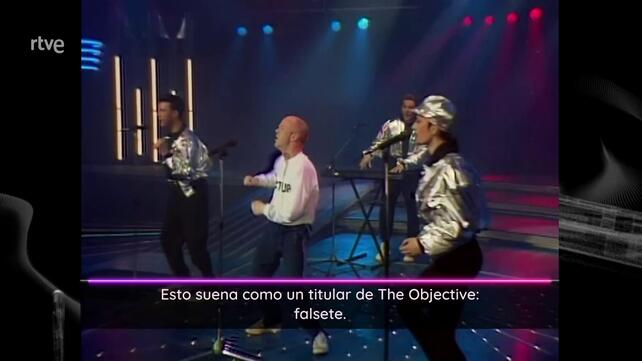

cmd <- "cat ~/proyecto_cachitos/2024_txt/00000514.jpg.subtitulo.tif.txt"
system(cmd, intern = TRUE)
#> [1] "El interrogatorio que el Juez Peinado"
#> [2] ""
#> [3] "sueña con hacerle a Begoña Gómez."
#> [4] "\f"Cachitos 2024. Primera parte
estadística
polémica
2025
textmining
ocr
linux
cachitos
Como todos los años toca hacer el análisis de de los subtítulos de Nochevieja a Cachitos
Requisitos
- Un plugin en el navegador que pueda identificar el
m3uasociado al archivomp4del video de Cachitos que está en rtve play. Yo he usado live Stream Downloader , pero seguro que hay alguno mejor - Usar un sistema operativo GNU/Linux, en mi caso Linux Mint 21.3
-
ffmpegsudo apt install ffmpeg. ffmpeg nos va a servir para poder bajar el video -
mplayersudo apt install mplayer.mplayerconmplayervamos a extraer 1 de cada 200 fotogramas del video -
imagemagickconsudo apt install imagemagick. Conimagemagickvamos a cambiar el tamaño de los fotogramas, recortar el área dónde están los subtítulos, convertir a formatotife invertir los colores para que el texto se vea mejor. -
parallelsudo apt install parallel. Conparallelvamos a poder utilizar varios núcleos e hilos del ordenador en paralelo y poder hacer la modificación de los fotogramas y el reconocimiento óptico de caracteres más rápido. -
tesseractsudo apt install tesseract-ocrysudo apt install tesseract-ocr-spa. Contesseractse va a hacer el reconocimiento óptico del texto y guardar en ficheros de texto. - Elimina ficheros de texto de menos de 10 bytes, puesto que ahí no hay texto .
Plugin
Con el plugin de Live Stream instalado en el navegador, lo primero que hacemos es ir a la web de rtveplay, buscar Nochevieja a Cachitos y darle al play. Estando en esa pestaña, le damos al plugin y nos abrirá una ventana emergente dónde se nos ha copiado la info del streaming. Nos bajamos el archivo y cambiamos el nombre a 2024_cachitos.mkv
Script de bash
El script es extract_subtitles.sh , se ejecutaría con extract_subtitles.sh 2024
El script es similar al de años anteriores
#!/bin/bash
root_directory=/home/jose/proyecto_cachitos
mkdir -p $root_directory
cd $root_directory
echo "First arg: $1"
mkdir -p video
cd video
ANNO=$1
echo $ANNO
suffix_video="_cachitos.mp4"
suffix_video_2024="_cachitos.mkv"
suffix_jpg_dir="_jpg"
suffix_txt_dir="_txt"
video_file=$ANNO$suffix_video
echo $video_file
if [ "$ANNO" == "2024" ] ;
then
video_file=$ANNO$suffix_video_2024
echo $video_file
fi
if [ "$ANNO" == "2023" ] ;
then
ffmpeg -i "https://rtvehlsvodlote7.rtve.es/mediavodv2/resources/TE_SHIECRO/mp4/3/1/1704096565613.mp4/video.m3u8?hls_no_audio_only=true&hls_client_manifest_version=3&idasset=7047821" -c copy $video_file
fi
if [ "$ANNO" == "2022" ] ;
then
ffmpeg -i "https://rtvehlsvodlote7.rtve.es/mediavodv2/resources/TE_SHIECRO/mp4/1/5/1672556504451.mp4/video.m3u8?hls_no_audio_only=true&hls_client_manifest_version=3&idasset=6767615" -c copy $video_file
fi
# Pasar a jpg uno de cada 200 fotogramas
mplayer -vf framestep=200 -framedrop -nosound $video_file -speed 100 -vo jpeg:outdir=$ANNO$suffix_jpg_dir
cd $ANNO$suffix_jpg_dir
# Convertir a formato más pequño
find . -name '*.jpg' | parallel -j 8 mogrify -resize 642x480 {}
# Seleccionar cacho dond están subtitulos
find . -name '*.jpg' | parallel -j 8 convert {} -crop 460x50+90+285 +repage -compress none -depth 8 {}.subtitulo.tif
# Poner en negativo para que el ocr funcione mejor
find . -name '*.tif' | parallel -j 8 convert {} -negate -fx '.8*r+.8*g+0*b' -compress none -depth 8 {}
# Pasar el ocr con idioma en español
find . -name '*.tif' | parallel -j 8 tesseract -l spa {} {}
# mover a directorio texto
mkdir -p $root_directory/$ANNO$suffix_txt_dir
mv *.txt $root_directory/$ANNO$suffix_txt_dir
cd $root_directory/$ANNO$suffix_txt_dir
# Borrar archivos de 10 bytes , subtítulos vacíos
find . -size -10c -exec rm -f {} \;
cd $root_directoryPara que funcione este script el archivo 2024_cachitos.mkv tiene que estar en el directorio video, en años anteriores me bajaba el video directamente con el script, en este no.
Extracción de fotogramas
Usando mplayer que sirve para reproducir el vídeo, podemos indicar además que nos extraiga una imagen cada 200 fotogramas framestep=200, también le decimos que lo reproduzca sin sonido y a velocidad alta y que guarde esos fotogramas como archivos jpeg en la ruta relativa `2023_jpg dentro de nuestro directorio principal.
Este es el comando que hace todo eso
mplayer -vf framestep=200 -framedrop -nosound $video_file -speed 100 -vo jpeg:outdir=$ANNO$suffix_jpg_dir Recorte de la zona de dónde está el rótulo
De años anteriores sé que si “achico” cada imagen anterior me vale de igual forma y por prueba y error vi en que parte de la imagen suelen colocar los rótulos. Así que con herramientas de imagemagick puedo manipular esas imágenes y extraer solo la zona del rótulo.
Reducción de la imagen
Cambiamos al directorio dónde hemos dejado las imágenes, y usando el comando find seleccionamos todos los archivos con extensión jpg y los reducimos a formato de 642x480.
Para eso usamos mogrify que forma parte de imagemagick y la parte de usar parallel es para que se ejecute en paralelo usando 8 hilos de cpu.
cd $ANNO$suffix_jpg_dir
# Convertir a formato más pequño
find . -name '*.jpg' | parallel -j 8 mogrify -resize 642x480 {}Seleccionar la zona dónde están los rótulos
Ahora usamos otras funciones de imagemagick que son convert y crop . Lo que hacemos es convertir a formato tif y recortamos justo la zona dónde están los rótulos.
Así, para cada imagen jpg creamos un archivo con nombre nombre_imagen.jpg.subtitulo.tif
# Seleccionar cacho dond están subtitulos
find . -name '*.jpg' | parallel -j 8 convert {} -crop 460x50+90+285 +repage -compress none -depth 8 {}.subtitulo.tifHacer el negativo de las imágenes
Para ayudar al software de reconocimiento óptico de caractereres obtenemos el negativo de cada tif. Para eso usamos de nuevo convert pero con la opción negate
# Poner en negativo para que el ocr funcione mejor
find . -name '*.tif' | parallel -j 8 convert {} -negate -fx '.8*r+.8*g+0*b' -compress none -depth 8 {}Reconocimiento óptico de caracteres
Nosotros lo que queremos es tener el texto, no una imagen. Para eso utilizamos tesseract. Le pasamos cada una de las imágenes anteriores en formato tif y nos devolverá el texto que contienen. No siempre lo hará bien, pero el resultado es aceptable. También creamos directorio dónde vamos a mover todos los ficheros de texto creados y eliminamos los ficheros con menos de 10 bytes.
# Pasar el ocr con idioma en español
find . -name '*.tif' | parallel -j 8 tesseract -l spa {} {}
# mover a directorio texto
mkdir -p $root_directory/$ANNO$suffix_txt_dir
mv *.txt $root_directory/$ANNO$suffix_txt_dir
cd $root_directory/$ANNO$suffix_txt_dir
# Borrar archivos de 10 bytes , subtítulos vacíos, bytes se indican con la letra c, cosas de linux
find . -size -10c -exec rm -f {} \;Y podemos ver cómo ha convertido por ejemplo el rótulo asociado al fotograma 514.
Como vemos, la lógica de la creación de los ficheros de texto ha sido la de ir guardando el nombre original del fotograma e ir añadiendo extensiones, (.jpg, .subtitulo.tif, .txt).
Algún ejemplo
library(tidyverse)
root_directory = "~/proyecto_cachitos/"
anno <- "2024"
library(magick)
(directorio_imagenes <- str_glue("{root_directory}video/{anno}_jpg/"))
#> ~/proyecto_cachitos/video/2024_jpg/
image_read(str_glue("{directorio_imagenes}00000551.jpg"))
image_read(str_glue("{directorio_imagenes}00000551.jpg.subtitulo.tif"))
(directorio_texto <- str_glue("{root_directory}{anno}_txt/"))
#> ~/proyecto_cachitos/2024_txt/
system(str_glue("cat {directorio_texto}00000544.jpg.subtitulo.tif.txt"), intern = TRUE)
#> [1] "Mira, Pedro Sánchez, al fondo hay una plataforma disponible."
#> [2] "Puedes subir ahí tu documental."
#> [3] "\f"Y en los siguientes post veremos el análisis de los comentarios. Podremos contestar a preguntas si se menciona más a Sánchez o a Feijoó, y que cada uno al leer los comentarios decida si el programa tiene sesgo o no.